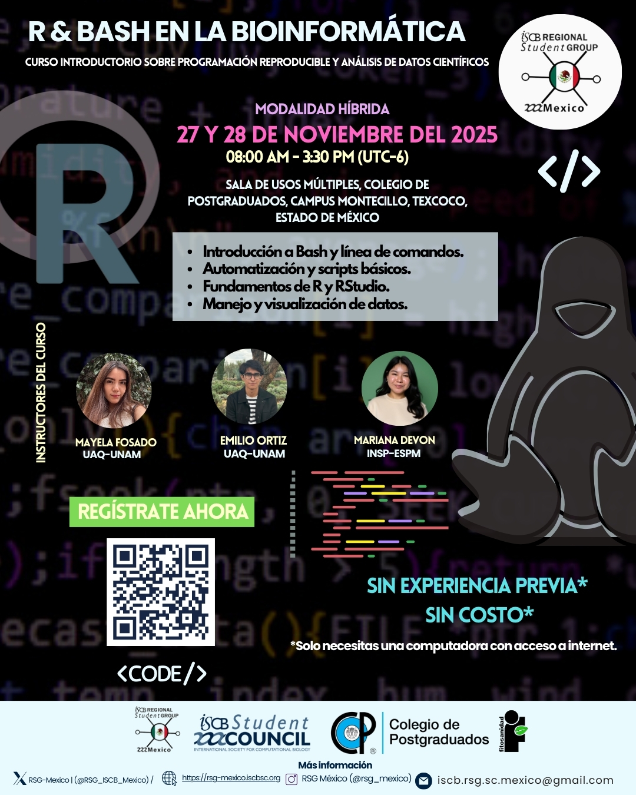

Workshop Bash & R
Información general
- Fechas: 27 y 28 de noviembre
- Duración del curso: 15 horas
- Horario: 8:00 am - 3:30 pm

Instructores
- Mayela Fosado-Mendoza - Tesista de licenciatura, UAQ-UNAM,
- Mariana Devon - Estudiante de maestría, UAM.
- Emilio Ortiz-Avila - Tesista de licenciatura, UAQ-UNAM.
Ayudantes:
- Aaron Espinosa Jaime – Estudiante de maestría, Cinvestav-LANGEBIO.
- Camilo Pérez – Estudiante de doctorado, Cinvestav-LANGEBIO.
- Andrés Arredondo – Ciencias Agrogenómicas, CCM-UNAM. Pagina web
- Johanna Castelán – Estudiante de maestría, UPAEP.
- Daniel Chávez – Profesor invitado, UAGro.
- Anthony Mederos – Estudiante de posgrado, UAQ.
Organizadores del curso:
- Abel Lovaco Flores – Estudiante de maestría, Cinvestav-Irapuato.
- Evelia Lorena Coss-Navarrete – PostDoc, LIIGH-UNAM. Pagina web
- Dr. Daniel Ochoa Martínez - COLPOS.
- Dr. Candelario Ortega Acosta - COLPOS.
- M.C. Rodrigo Muñoz Javier - COLPOS.
Para conocer más sobre nosotros, puedes visitar la presentación del equipo.
Resumen
Este curso ofrece una introducción práctica al uso de herramientas computacionales esenciales en bioinformática. Las y los participantes aprenderán a interactuar con la computadora mediante la línea de comandos Bash para explorar, organizar y manipular archivos, así como a utilizar R a través de la interfaz de RStudio para realizar análisis básicos, generar gráficas simples y estructurar proyectos reproducibles.
El curso está diseñado para construir, desde cero y paso a paso, las habilidades fundamentales necesarias en programación aplicada a la biología. Se abordarán temas como la gestión y filtrado de archivos en Bash, la automatización de tareas simples y la creación de scripts y visualizaciones en R como parte del análisis científico.
Objetivos
Al finalizar este curso, las y los participantes serán capaces de:
En Bash:
- Comprender el entorno del sistema operativo Linux y utilizar la línea de comandos Bash para navegar, organizar y manipular archivos y directorios.
- Aplicar comandos esenciales y expresiones regulares para buscar, filtrar y procesar información contenida en archivos.
- Construir y ejecutar secuencias de comandos en Bash para realizar tareas básicas de análisis o procesamiento de archivos con datos biológicos.
- Integrar buenas prácticas computacionales que promuevan la reproducibilidad y la organización en proyectos bioinformáticos.
En R:
- Conocer la interfaz de RStudio y ubicar sus principales paneles y herramientas.
- Usar R a través de la interfaz de RStudio para análisis sencillos.
- Crear variables, usar operadores y ejecutar funciones básicas en R.
- Administrar paquetes e iniciar proyectos estructurados en RStudio.
- Generar scripts simples y mantener un flujo de trabajo reproducible.
- Crear gráficas básicas en R para visualizar datos de manera rápida y clara.
Citar y reutilizar el material del curso
El contenido de este curso puede reutilizarse y adaptarse libremente, siempre que se otorgue el crédito correspondiente. Todo el material está disponible bajo la licencia Attribution-NonCommercial-ShareAlike 4.0 International (CC BY-NC-SA 4.0).
No se requiere experiencia previa en programación ni en el uso de Linux.
Conocimientos básicos sobre el manejo de archivos en computadora.
Durante el curso, todas las actividades se realizarán en un servidor proporcionado por el equipo docente. Antes de comenzar, te recomendamos revisar el tutorial introductorio disponible aquí:
Tutorial de acceso a Better Lab
Gracias a este servidor, no es necesario instalar Linux, R ni Bash en tu computadora.
Si deseas conservar y trabajar posteriormente con los archivos generados en el curso, es recomendable tener instalado en tu equipo:
- Entorno de Linux (Bash)
- R y Rstudio
Las instrucciones para instalarlos están en:
| Tema | Horario | Tiempo | |
|---|---|---|---|
| 27 de noviembre | |||
| Sección 1 - (8:00 - 9:45 h) | 8:00 - 09:45 h | 1 h 45 min | |
| Presentación | 8:00 h | 30 min | |
| Buenas prácticas en bioinformática | 8:30 h | 30 min | |
| Conceptos Unix y GNU/Linux | 9:00 h | 15 min | |
| Mis primero pasos en Bash | 9:15 h | 30 min | |
Receso Realizar pre-encuesta |
9:45 h | 15 min | |
| Sección 2 - (10:00 - 12:15 h) | 10:00 h | 2 h 15 min | |
| Explorando texto y flujo de datos en Bash | 10:00 h | 1 h | |
| Receso | 11:00 h | 15 min | |
| Exploración y manipulación de archivos fasta | 11:15 h | 1 h | |
| Comida 🍴 | 12: 15 h | 1 h | |
| Sección 3 (13:15 - 15:30 h) | 13:15 h | 2 h 15 min | |
| Bed tools - Preparación de un archivo .bed | 13:15 h | 1 h | |
| Receso | 14:15 h | 10 min | |
| Bed tools - Análisis de regiones genómicas | 14:25 h | 45 min | |
Cierre Realizar inter-encuesta |
15:10 h | 20 min | |
| 28 de noviembre | |||
| Sección 1 - (8:00 - 9:45 h) | 8:00 h | 1 h 45 min | |
Inicio Revisión: responder preguntas de la última encuesta |
8:00 h | 30 min | |
| Conceptos de R | 8:45 h | 1 h | |
| Receso | 9:45 h | 15 min | |
| Sección 2 - (10:00 - 11:00 h) | 10:00 h | 2 h 15 min | |
| Mis primeros pasos en R | 10:00 h | 1 h | |
| Receso | 11:00 h | 15 min | |
| Introducción al manejo de datos en R | 11:15 h | 1 h | |
| Comida 🍴 | 12:15 h | 1 h | |
| Sección 3 (13:15 - 15:30 h) | 13:15 h | 2 h 15 min | |
| Manipulación y limpieza de datos | 13:15 h | 30 min | |
| Visualización y Análisis de datos | 13:45 h | 50 min | |
| Bed Tools R | 14:35 h | 45 min | |
Clausura Realizar última encuesta |
15:10 h | 20 min |